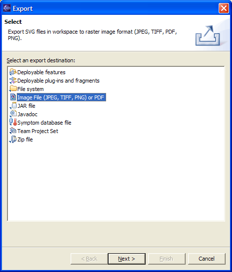
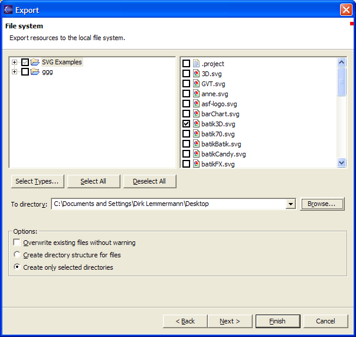
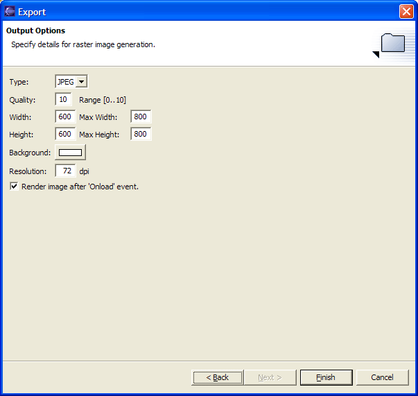

Converting SVG Files
SVG file conversion to raster file formats (JPEG, GIF, PNG) is available via a specialized
export wizard. To use the wizard select 'File / Export ...'. A dialog will come up offering
you a selection of export wizards. Select the 'Image File (JPEG, TIFF, PNG) or PDF' export
wizard.

The next wizard page allows you to select those SVG files you wish to convert. The page will
use your current workbench selections as a default.

The 'Output Options' page lets you specify the conversion parameters:
- Type - this is the raster image file type (or PDF)
- Quality - a setting required to determine the type of compression to perform. 0 is the lowest and 10 the highest quality
- Width - the width of the generated raster image file
- Max Width - the maximum width (determined by the height value)
- Height - the height of the generated raster image file
- Max Height - the maximum height (determined by the width value)
- Background - the background color to use if the SVG file doesn't specify one itself
- Resolution - dots per inch (72 = screen resolution)
- 'Onload' event - if checked then the onload event will be executed first before a raster image gets generated

Click on 'Finish' to generate the raster image file.